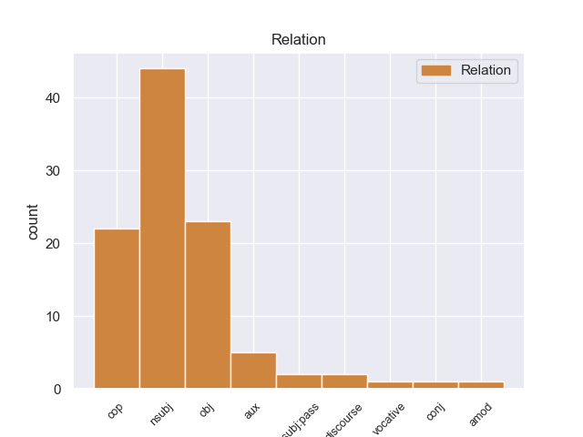
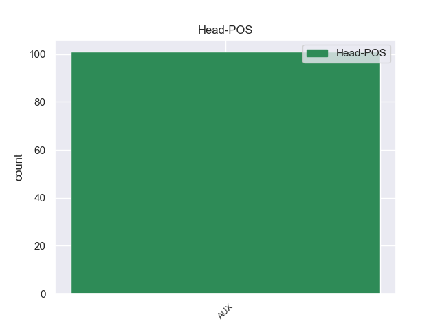
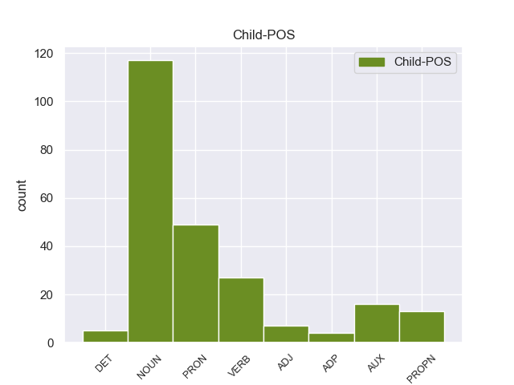

Distribution of features within this leaf



Agreement Rules sorted by frequency.
- When the dependent token is the nominal subject(nsubj) of the head token, and the head token is AUX and the dependent token is NOUN.
1 पलीकडे _ _ _ _ 0 _ _ _
2 None _ _ _ _ 0 _ _ _
3 None _ _ _ _ 0 _ _ _
4 लहानसा _ _ _ _ 0 _ _ _
5 गोठा गोठा NOUN _ Case=Nom|Gender=Masc|Number=Sing 6 nsubj _ _
6 होता असणे AUX _ Gender=Masc|Number=Sing|Person=3|Tense=Past|VerbForm=Fin 0 _ _ _
7 . _ _ _ _ 0 _ _ _
1 खरोखरच _ _ _ _ 0 _ _ _
2 त्या _ _ _ _ 0 _ _ _
3 None _ _ _ _ 0 _ _ _
4 None _ _ _ _ 0 _ _ _
5 None _ _ _ _ 0 _ _ _
6 None _ _ _ _ 0 _ _ _
7 जीव _ _ _ _ 0 _ _ _
8 की _ _ _ _ 0 _ _ _
9 प्राण _ _ _ _ 0 _ _ _
10 प्रेम प्रेम NOUN _ Case=Nom|Gender=Neut|Number=Sing 11 cop _ _
11 होते असणे AUX _ Gender=Neut|Number=Sing|Person=3|Tense=Past|VerbForm=Fin 0 _ _ _
12 . _ _ _ _ 0 _ _ _
1 None _ _ _ _ 0 _ _ _
2 None _ _ _ _ 0 _ _ _
3 दोन _ _ _ _ 0 _ _ _
4 - _ _ _ _ 0 _ _ _
5 चार _ _ _ _ 0 _ _ _
6 कलमे कलम NOUN _ Case=Acc|Gender=Neut|Number=Plur 8 obj _ _
7 लावली _ _ _ _ 0 _ _ _
8 होती असणे AUX _ Gender=Neut|Number=Plur|Person=3|Tense=Past|VerbForm=Fin 0 _ _ _
9 . _ _ _ _ 0 _ _ _
1 None _ _ _ _ 0 _ _ _
2 None _ _ _ _ 0 _ _ _
3 None _ _ _ _ 0 _ _ _
4 None _ _ _ _ 0 _ _ _
5 None _ _ _ _ 0 _ _ _
6 None _ _ _ _ 0 _ _ _
7 तेथे _ _ _ _ 0 _ _ _
8 झाडे झाड NOUN _ Case=Nom|Gender=Neut|Number=Plur 9 aux _ _
9 होती असणे AUX _ Gender=Neut|Number=Plur|Person=3|Tense=Past|VerbForm=Fin 0 _ _ _
10 . _ _ _ _ 0 _ _ _
1 त्याला _ _ _ _ 0 _ _ _
2 म्हणावे _ _ _ _ 0 _ _ _
3 , _ _ _ _ 0 _ _ _
4 None _ _ _ _ 0 _ _ _
5 None _ _ _ _ 0 _ _ _
6 बहीण _ _ _ _ 0 _ _ _
7 तरी _ _ _ _ 0 _ _ _
8 दे _ _ _ _ 0 _ _ _
9 , _ _ _ _ 0 _ _ _
10 नाहीतर _ _ _ _ 0 _ _ _
11 रात्री _ _ _ _ 0 _ _ _
12 पायी _ _ _ _ 0 _ _ _
13 चाळीस _ _ _ _ 0 _ _ _
14 कोस _ _ _ _ 0 _ _ _
15 चालत _ _ _ _ 0 _ _ _
16 जा _ _ _ _ 0 _ _ _
17 व _ _ _ _ 0 _ _ _
18 त्या _ _ _ _ 0 _ _ _
19 अंधाऱ्या _ _ _ _ 0 _ _ _
20 None _ _ _ _ 0 _ _ _
21 None _ _ _ _ 0 _ _ _
22 पांढरी _ _ _ _ 0 _ _ _
23 फुले _ _ _ _ 0 _ _ _
24 घेऊन _ _ _ _ 0 _ _ _
25 उजाडत _ _ _ _ 0 _ _ _
26 हजर _ _ _ _ 0 _ _ _
27 हो _ _ _ _ 0 _ _ _
28 , _ _ _ _ 0 _ _ _
29 नाहीतर _ _ _ _ 0 _ _ _
30 डोके डोके NOUN _ Case=Nom|Gender=Neut|Number=Sing 32 nsubj:pass _ _
31 उडवण्यात _ _ _ _ 0 _ _ _
32 येईल येणे AUX _ Number=Sing|Person=3|Tense=Fut|VerbForm=Fin 0 _ _ _
33 ! _ _ _ _ 0 _ _ _
1 खुशमस्कऱ्या _ _ _ _ 0 _ _ _
2 None _ _ _ _ 0 _ _ _
3 None _ _ _ _ 0 _ _ _
4 गेला _ _ _ _ 0 _ _ _
5 व _ _ _ _ 0 _ _ _
6 म्हणाला _ _ _ _ 0 _ _ _
7 , _ _ _ _ 0 _ _ _
8 राजा _ _ _ _ 0 _ _ _
9 , _ _ _ _ 0 _ _ _
10 राजा राजा NOUN _ Case=Nom|Gender=Masc|Number=Sing 18 discourse _ SpaceAfter=No
11 , _ _ _ _ 0 _ _ _
12 त्या _ _ _ _ 0 _ _ _
13 None _ _ _ _ 0 _ _ _
14 None _ _ _ _ 0 _ _ _
15 बहीण _ _ _ _ 0 _ _ _
16 फार _ _ _ _ 0 _ _ _
17 सुंदर _ _ _ _ 0 _ _ _
18 आहे असणे AUX _ Number=Sing|Person=3|Tense=Pres|VerbForm=Fin 0 _ _ _
19 . _ _ _ _ 0 _ _ _
1 दादा दादा NOUN _ Case=Nom|Gender=Masc|Number=Sing 5 vocative _ SpaceAfter=No
2 , _ _ _ _ 0 _ _ _
3 मी _ _ _ _ 0 _ _ _
4 साप _ _ _ _ 0 _ _ _
5 होतो असणे AUX _ Gender=Masc|Number=Sing|Person=1|Tense=Past|VerbForm=Fin 0 _ _ _
6 . _ _ _ _ 0 _ _ _
1 तो _ _ _ _ 0 _ _ _
2 पक्षी _ _ _ _ 0 _ _ _
3 किंवा _ _ _ _ 0 _ _ _
4 प्राणी प्राण NOUN _ Case=Nom|Gender=Masc|Number=Sing 5 conj _ _
5 नाही नाही AUX _ Number=Sing|Person=3|Polarity=Neg|VerbForm=Fin 0 _ _ _
6 आहे _ _ _ _ 0 _ _ _
7 . _ _ _ _ 0 _ _ _
1 खरोखरच _ _ _ _ 0 _ _ _
2 त्या _ _ _ _ 0 _ _ _
3 None _ _ _ _ 0 _ _ _
4 None _ _ _ _ 0 _ _ _
5 None _ _ _ _ 0 _ _ _
6 None _ _ _ _ 0 _ _ _
7 जीव जीव NOUN _ Case=Nom|Gender=Masc|Number=Sing 11 amod _ _
8 की _ _ _ _ 0 _ _ _
9 प्राण _ _ _ _ 0 _ _ _
10 प्रेम _ _ _ _ 0 _ _ _
11 होते असणे AUX _ Gender=Neut|Number=Sing|Person=3|Tense=Past|VerbForm=Fin 0 _ _ _
12 . _ _ _ _ 0 _ _ _
Disagree Examples:
1 " _ _ _ _ 0 _ _ _
2 तुम्हा _ _ _ _ 0 _ _ _
3 बायकांना बाई NOUN _ Case=Dat|Gender=Fem|Number=Plur 5 nsubj _ _
4 कळत _ _ _ _ 0 _ _ _
5 नाही नाही AUX _ Number=Sing|Person=3|Polarity=Neg|VerbForm=Fin 0 _ _ _
6 . _ _ _ _ 0 _ _ _
7 " _ _ _ _ 0 _ _ _
1 दोन _ _ _ _ 0 _ _ _
2 लाडू लाडू NOUN _ Case=Nom|Gender=Masc|Number=Sing 4 nsubj _ _
3 शिल्लक _ _ _ _ 0 _ _ _
4 होते असणे AUX _ Gender=Masc|Number=Plur|Person=3|Tense=Past|VerbForm=Fin 0 _ _ _
5 . _ _ _ _ 0 _ _ _
1 हजारो _ _ _ _ 0 _ _ _
2 लोक _ _ _ _ 0 _ _ _
3 तो _ _ _ _ 0 _ _ _
4 प्रकार प्रकार NOUN _ Case=Acc|Gender=Masc|Number=Sing 6 obj _ _
5 पाहत _ _ _ _ 0 _ _ _
6 होते असणे AUX _ Gender=Masc|Number=Plur|Person=3|Tense=Past|VerbForm=Fin 0 _ _ _
7 . _ _ _ _ 0 _ _ _
1 तो _ _ _ _ 0 _ _ _
2 म्हणाला _ _ _ _ 0 _ _ _
3 , _ _ _ _ 0 _ _ _
4 दादा _ _ _ _ 0 _ _ _
5 , _ _ _ _ 0 _ _ _
6 जा _ _ _ _ 0 _ _ _
7 व _ _ _ _ 0 _ _ _
8 राजाला _ _ _ _ 0 _ _ _
9 सांगा _ _ _ _ 0 _ _ _
10 की _ _ _ _ 0 _ _ _
11 , _ _ _ _ 0 _ _ _
12 None _ _ _ _ 0 _ _ _
13 None _ _ _ _ 0 _ _ _
14 वडिलांना वडिल NOUN _ Case=Dat|Gender=Masc|Number=Plur 17 nsubj _ _
15 स्वर्गात _ _ _ _ 0 _ _ _
16 करमत _ _ _ _ 0 _ _ _
17 नाही नाही AUX _ Number=Sing|Person=3|Polarity=Neg|VerbForm=Fin 0 _ _ _
18 . _ _ _ _ 0 _ _ _
1 नवीन _ _ _ _ 0 _ _ _
2 राजा राजा NOUN _ Case=Nom|Gender=Neut|Number=Sing 8 nsubj _ SpaceAfter=No
3 - _ _ _ _ 0 _ _ _
4 राणी _ _ _ _ 0 _ _ _
5 उत्कृष्ठ _ _ _ _ 0 _ _ _
6 राज्यकारभार _ _ _ _ 0 _ _ _
7 चालवू _ _ _ _ 0 _ _ _
8 लागली लागणे AUX _ Aspect=Perf|Gender=Neut|Number=Plur|Person=3|VerbForm=Fin 0 _ _ _
9 . _ _ _ _ 0 _ _ _